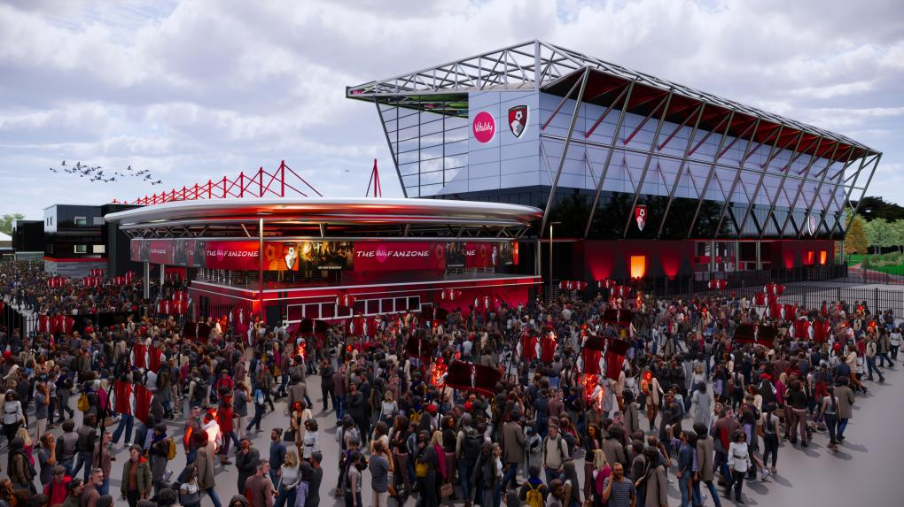

Whistle Football Club owner Oliver Wilkinson has reflected on the conclusion of the 2025/26 campaign, describing the season as an important step forward in the club’s long-term journey.
The Whistlers secured a seventh-place finish in EFL League One, narrowly missing out on the play-off places, while also lifting the Vertu Trophy in a memorable Wembley triumph.
Speaking following the end of the season, Wilkinson spoke of both pride in the club’s achievements and ambition for what comes next.
“This season represents real progress for Whistle Football Club. To be competing at the top end of League One, while also bringing silverware back to our supporters, is something we can all be proud of.
“At the same time, we are not here to simply compete — we are here to grow, to improve, and ultimately to take this club even further.”
Wilkinson also reflected on the journey since his takeover in 2012, highlighting the collective effort behind the club’s rise.
“When I took over this football club, the priority was survival. What has followed since then has been built on hard work, unity and belief from everyone involved.
“We have climbed through the leagues together, and this season shows that we now belong at this level — but we must not stop here.”

The owner also praised head coach Johannes Hoff Thorup and the football staff for their impact during the second half of the campaign.
“Johannes and his staff have brought clear ideas, structure and ambition to the football side of the club.
“The progress we have seen over the second half of the season gives us real confidence moving forward.”
Wilkinson paid tribute to the supporters, underlining their importance to the identity and direction of the club.
“Our supporters are the heart of this football club. Their loyalty, passion and belief drive everything we do.
“Whether at home or away, they have been incredible, and we are determined to reward that support with continued progress.”
Looking ahead to the summer, Wilkinson emphasised the importance of making smart, sustainable decisions as the club continues to grow.
“This summer is a crucial moment for us. We will continue to strengthen the club both on and off the pitch, but we will do it the right way.
“We have learned from the past. Sustainability, smart decisions and long-term thinking will always guide us.”
Wilkinson concluded with a clear message on the club’s ambition for the future.
“We are building something special here at Whistle Football Club.
“The next step is clear — we want to be competing for promotion, and we will do everything we can to achieve that together.”
Whistle FC thanks all supporters, players and staff for their contribution to the 2025/26 season.